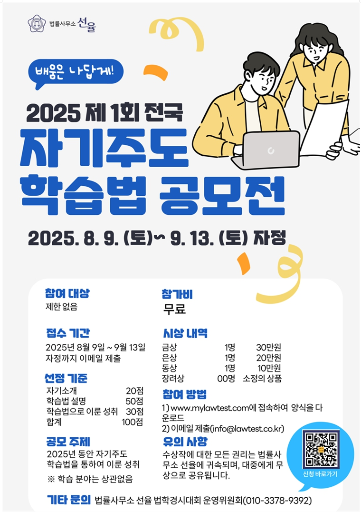

「헌법은 우리 이야기다」
Audi Alteram Partem
헌법 전문부터 제37조 제2항까지를 다루는 헌법 입문서. "딱딱한 조문들을 어떻게 하면 독자 여러분의 가슴에 닿게 할 수 있을까"라는 문제의식에서 출발하여, 판례 기반의 짧은 소설과 Q&A 형식을 결합한 독특한 구성입니다.
한 세대의 학습 경험이 다음 세대의 자산으로 누적되는 구조. 수상자 공동체의 도서 출판, 학술 논문 게재, 법학공부방법 연구로 이어진 실질적 결실입니다.
수상자들의 협업이 결실을 맺어 7권의 도서가 출판되었으며, 3권의 책을 추가 저술 중입니다. 한국 법학 교육에서 흔치 않은, 학부 재학생·대학원 재학생·학사 졸업자가 한자리에 모여 협업하는 구조입니다.
헌법 전문부터 제37조 제2항까지를 다루는 헌법 입문서. "딱딱한 조문들을 어떻게 하면 독자 여러분의 가슴에 닿게 할 수 있을까"라는 문제의식에서 출발하여, 판례 기반의 짧은 소설과 Q&A 형식을 결합한 독특한 구성입니다.

변호사시험 민사법 사례형 1회부터 14회까지의 기출문제를 수험생의 시각에서 직접 해설한 책입니다. 수상자 공동체의 협업으로 완성되었으며, 시험을 준비하는 후속 세대에게 학습 자산으로 누적됩니다.

주요 조문의 핵심 내용만 간결하게 정리한 법률 입문서. 채권총론 영역의 민법 조문을 초학자의 시각에서 쉽게 풀어내, 법학 입문자가 기초를 다질 수 있도록 구성되었습니다.
수상자들은 KAIST 교수진의 지도 하에 등재 학술지에 3편의 논문을 게재하였으며, 4편의 후속 논문을 작성 중입니다. 학부생·졸업생이 등재 학술지에 논문을 게재하는 것은 한국 학계에서 매우 드문 사례이며, 이 대회가 단순한 시험을 넘어 실질적 학문 공동체로 기능하고 있음을 보여줍니다.
인공지능의 데이터 학습은 공정한 이용이고 정당한 이익이 있는가?
— 저작권과 개인정보 보호 비교 연구
인공지능의 편향성 평가와 관리에 관한 비교법적 연구
— NIST, EU, OECD 및 ISO 프레임워크를 중심으로
성폭력처벌법 제13조의 '그 밖의 통신매체' 해석과 가벌성 확장
— 대법원 2026.3.12. 선고 2025도12709 판결을 중심으로
이 대회는 시험 그 자체를 넘어 학습 방법론의 공유와 누적을 추구합니다. 응시자들이 한 해 동안의 자기주도 학습법을 정리해 공유하는 '제1회 전국 자기주도 학습법 공모전'을 2025년 9월 20일 제5회 시상식과 함께 시행하였습니다.

| 시상 | 주요 성과 |
|---|---|
| 대상 | 로스쿨 민법 A+ · 법학경시대회 최우수상·민법 금상 · 저서 2권(단독저서 1권) · LEET 30점 상승 · 우수학술지 논문 게재 |
| 최우수상 | 전일제 직장 + 주경야독 · 인지과학 적용 학습법 개발 · 변호사시험 기출해설서 포함 저서 6권 |
| 최우수상 | 독창적 민법 학습법 · 학과 수석 · 민법 관련 저서 3권 |
| 최우수상 | 서울대 전과목 A+ · 헌법 관련 저서 1권 |
제1회 공모전은 2025년 9월 제5회 법학경시대회 시상식과 함께 개최되었습니다. 한 세대의 학습 노하우가 다음 세대의 학습 자산으로 누적되는 순환식 교육 구조의 핵심 장치입니다.
제8회 법학경시대회 직후 접수를 시작하여 2026년 9월 중순 시상 예정입니다. 자세한 모집 요강과 양식은 공지사항에서 별도 안내합니다.
본 대회 운영 과정에서 축적된 교육공학·인지과학적 통찰은 KAIST 인공지능·리걸테크 연구실과의 공동 연구로 이어지고 있습니다. 다음 두 건의 연구가 진행 중입니다.
학습자의 학습 이력을 기반으로 인공지능 모델이 맞춤형 법학 학습 경로를 추천하는 시스템. 이 대회의 누적 응시 데이터가 잠재적 학습 자원이 될 수 있습니다.
※ 본 발명은 출원 전이며, 신규성 보호를 위해 구체적 기술 구성은 출원 후 공개합니다.
인지심리학 원리에 기반하여 민법 학습의 효율성을 높이는 학습 기기 연구. KAIST 인공지능·리걸테크 연구실과 본 대회 일부 수상자가 공동으로 진행 중입니다.
법학을 공부하는 대부분의 학생은 독서백편의자현(讀書百遍義自見)을 유일한 학습법으로 믿고 교재나 판례집을 반복해서 정독하는 방식에만 의존합니다. 단순 반복 중심의 학습법은 이해 없이 암기에 치우칠 가능성이 높고, 학습자의 사고력과 문제해결 능력을 충분히 길러주기 어렵습니다.
제14회 변호사시험(2025년 4월 시행) 합격률은 52.28%로 전년 대비 소폭 하락하였으며, 이는 기존 학습법보다 효율적인 학습법의 필요성을 시사합니다. 본 연구는 과학적·인지심리학적 원리에 기반한 효과적·효율적 법학 학습 방법을 탐구하는 것을 목적으로 합니다.
※ 본 연구는 후속 발명 출원 및 학술 논문 투고를 전제로 진행 중이며, 구체적 기술 구성은 권리 보호 절차 완료 후 단계적으로 공개합니다.
대회 수상이 단발성 이력에 그치지 않고 실질적 성장으로 이어지고 있습니다. 회차별 대상 수상자들의 진로는 이 대회의 인재 발굴 기능을 보여줍니다.
| 회차 | 수상자 | 진로 |
|---|---|---|
| 제1회 | 한정현KAIST 졸업 | 산업통상자원부 규제개혁법무담당관실 인턴 |
| 제2회 | 김예진충북대 로스쿨 재학 | 변함없음 |
| 제3회 | 이규한현직 경찰관 | 경찰청 민사법 강사 |
| 제4회 | 박상영고려대 졸업 | 서울대학교 대학원 법학과 석사과정 합격 2026 전기 |
| 제5회 | 여운규방송통신대 법학과 재학 | 변함없음 |
| 제6회 | 박준한고려사이버대 재학 | 치안대학원 공공안전법학 석사과정 진학 예정 |
법학경시대회는 앞으로의 공부 방향에 있어 필요한 통찰을 제공해 주었고, 민사법 사례형을 직접 써 보는 연습이 서울대학교 대학원 법학과 입학으로 이어진 빛이 되었다고 확신합니다.
법학경시대회 운영진과 수상자 공동체는 학문적 성취를 사회로 환원하고 있습니다.

2025년 5월 12일, 대회 수익금을 활용하여 KAIST 법 과목 「기업가를 위한 법」 수강생들에게 성심당 튀김소보로 400인분과 산양우유 400개를 기부하였습니다.
One generation's learning becomes the next generation's asset